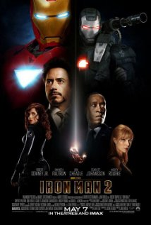

ReviewSkimmer.com
Charts
Presentation
About
Iron Man 2

"The cast was
perfect
."
—
EddyOne
"They're all
excellent
."
—
Jackpollins
"Of course all the special effects are
amazing
, with a lot attention to detail."
—
EddyOne
"And it's not like anything actually happened with them anyway, so why
waste
out time and goodwill?"
—
evan_harvey
") I almost felt
bad
for her...then I reminded myself that she is Gwyneth Paltrow!"
—
jcdugger